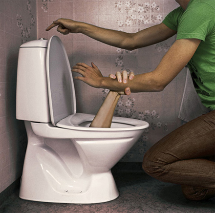

Τι έχουν να δουν ακόμα τα αυτάκια μας !!!!!
Οι Ισραηλινοί χτυπήσανε στο ψαχνό τους ακτιβιστές που πηγαίνανε με το πλοίο στη Γάζα και βέβαια κατασχέσανε για πάρτη τους την ανθρωπιστική βοήθεια.
Οι μπάτσοι που σκότωσαν τον Γρηγορόπουλο αφήνονται ελεύθεροι αυτή την εβδομάδα, ενώ από τα πρώτα 20 δισεκατομμύρια ευρώ που δανειστήκαμε με πολύ ψηλό επιτόκιο, τα δέκα πήγανε στις τράπεζες που εμφανίσανε υπερκέρδη την προηγούμενη χρονιά και που έχουν κατασχέσει χιλιάδες σπίτια και αυτοκίνητα.....και φυσικά ετοιμάζονται να μετατρέψουν και τις συντάξεις και τους μισθούς σε μπορμπουάρ ?????
| |
Το εργατικό και φοιτητικό κίνημα αντιστέκεται σθεναρά !!!!!!
| |
Ανάμεσα στη λύπη και στο τίποτα, διαλέγω τη λύπη.
Ουίλιαμ Φώκνερ
| |

Όταν τα μεγάλα όνειρα σκοτώνονται τρέχει πολύ αίμα.
| |
Lost Bodies Live
Παρασκευή 28 Μαίου στο BFEST στη σχολή Καλών Τεχνών Πειραιώς 256.
Σήμερα μαζί με Lost Bodies παίζουν οι : Eκτός Ελέγχου, Πανικός, Ψευδοπροφήτες, Grover, Μωρά στη φωτιά, Ντίνος Σαδίκης, Keny Arkana.
Περισότερες πληροφορίες για το BFEST : WWW.bfest.gr
| |
Σάββατο 22 Μαίου, Είσοδος ελεύθερη
Μικρόπολις - Βενιζέλου και Βασ. Ηρακλείου 18
Θεσσαλονίκη
Μικρόπολις - Κοινωνικός Χώρος για την Ελευθερία
| |
Άλλος μαυρομάτα και άλλος τσιμπλομάτα.
| |

Ποίηση υπάρχει μόνο απο τη στιγμή που συνειδητοποιήσουμε οτι δεν κατέχουμε τίποτα.
John Cage
| |
Ας μη συγχέουμε το κενό με το μηδέν. Το κενό προϋποθέτει τοιχώματα, τα οποία δεν μπορεί να έχει το μηδέν.
Maurice Maeterlingk
| |
Ο αληθινός ποιητής είναι μικρότερος από την ποίησή του.
Zarko Petan
| |
Κάθε ηδονή είναι ανήθικη, γιατί μόνο η οδύνη είναι ηθική.
Θωμάς εκ Κέμπης (Περί μιμήσεως του Χριστού)
| |
Για να πετύχει κανείς πρέπει να διαθέτει τρία πράγματα : Αμάθεια, θρασύτητα και παλιανθρωπιά.
Λουκιανός
| |
Οι τηγανητοί κολοκυθοκορφάδες είναι σε σχέση με το κολοκύθι, ότι είναι η λολίτα σε σχέση με τη μητέρα της.
Manuel Vazquez Montalban
| |
Δεδομένου του ότι ένας πολιτικός δεν πιστεύει ποτέ αυτά που λέει, μου κάνει μεγάλη εντύπωση που μερικοί τους πιστεύουν.
Σάρλ Ντε Γκώλ
| |
Ας χαλαρώσουμε το Σαββατοκύριακο για να είμαστε κοτσονάτοι στην εβδομάδα που μας έρχεται (αύριο έχουμε ποδηλατοπορεία)
Κυριακή, 9 Μάη, Αθήνα Πεδίο του Άρεως στις 12:00.
Και στις πλατείες όλων των μεγάλων πόλεων. Συμμετοχές από 30 πόλεις.
| |
Όποιος υποχωρεί μπορεί να ξαναπολεμήσει.
Δημοσθένης
| |
ΛΑ.Ο.Σ. ΠΑΣΟΚ ΣΤΗΝ ΕΞΟΥΣΙΑ
Aπό ΠΑΣΟΚ και ΛΑΟΣ ψηφίστηκε το σ/ν για τα νέα μέτρα ?????
| |
Τελείωνε την κάθε ημέρα και άφηνέ την πίσω. Έκανες ότι μπορούσες, μερικά σφάλματα και ανοησίες αναμφίβολα εισχώρησαν˙ ξέχνα τα όσο πιο γρήγορα μπορείς.
Ralph Waldo Emerson (1800)
| |
Η πρόεδρος της Αργεντινής Christina Fernandez De Kirchner, έστειλε μήνυμα ειδικά για τους Έλληνες καιφυσικά δεν μεταδώθηκε απο τα ΜΜΕ.
Προειδοποίηση για την Ελλάδα από την πρόεδρο της, παθούσης λόγω ΔΝΤ, Αργεντινής, , για την Ελλάδα και τα εξοντωτικά οικονομικά μέτρα λιτότητας «Τα άγρια μέτρα λιτότητας θα συναντήσουν αντίσταση. Θα τελειώσουν άσχημα στην Ελλάδα. Τα οικονομικά μέτρα που πήραν θα πυροδοτήσουν κοινωνική αναταραχή, όπως αυτή που αντιμετώπισε η χώρα μας την περασμένη δεκαετία". «Οι συνταγές που επιβάλλονται στην Ελλάδα είναι ταυτόσημες με αυτές που εφαρμόστηκαν εδώ το 2001», δήλωσε σε δημοσιογράφους στην Αργεντινή η Kirchner, υπογραμμίζοντας τις ομοιότητες μεταξύ της κατάστασης που επικρατεί στην Ελλάδα και την κοινωνική, πολιτική και οικονομική κρίση που συγκλόνισε την Αργεντινή προτού η χώρα κηρύξει στάση πληρωμών.
Η ισχυρή μεσαία τάξη της Αργεντινής, που αποτελούσε τη «ραχοκοκαλιά» της κοινωνίας και της οικονομίας της, σταδιακά διαλύθηκε προς όφελος μίας ολιγάριθμης διεφθαρμένης οικονομικής και πολιτικής ελίτ. Το 60% του πληθυσμού σε μία δεκαετία βρέθηκε κάτω από το όριο της φτώχειας με το 55% των εργαζομένων να είναι ανασφάλιστοι.
Ο πληθωρισμός καταδυνάστευε τη χώρα, οι τιμές, μήνα με το μήνα, αυξάνονταν ραγδαία και οι πολίτες έβλεπαν, ανήμποροι να αντιδράσουν, το νόμισμά τους να χάνει καθημερινά την αξία του.
Ως αποτέλεσμα των παραπάνω, το χρέος της Αργεντινής ανήλθε στο 41% από 29% του Ακαθάριστου Εθνικού Προϊόντος, μεταξύ 1993 και 1998.
Το 1997, η γειτονική Βραζιλία βρέθηκε σε βαθιά κρίση, η οποία είχε σαν αποτέλεσμα την υποτίμηση του βραζιλιάνικου νομίσματος κατά 50% της αρχικής του αξίας. Οι εξαγωγές της Αργεντινής προς τη Βραζιλία εκμηδενίστηκαν, ενώ αυξήθηκαν κατακόρυφα οι εισαγωγές.
Παράλληλα, η άνοδος της τιμής του δολαρίου, με το οποίο ήταν συνδεδεμένο το αργεντίνικο νόμισμα, κατέστησε τα προϊόντα της Αργεντινής μη ανταγωνιστικά στις διεθνείς αγορές, πλήττοντας θανάσιμα κάθε κλάδο παραγωγικής δραστηριότητας.
Το 1998, η Αργεντινή είχε φτάσει να δανείζεται από τις διεθνείς κεφαλαιαγορές με επιτόκιο 10,5% και αναγκαστικά κατέφυγε για πρώτη φορά στο ΔΝΤ.
Το ΔΝΤ είχε χορηγήσει δάνεια 7,2 δισ. δολ. το 1999 και 39,7 δισ. δολ. τον Δεκέμβριο του 2000, όμως οι όροι ήταν ασφυκτικοί. Οι μισθοί των δημοσίων υπαλλήλων μειώθηκαν και οι καταθέσεις πάγωσαν.
Την ίδια περίοδο, οι επενδυτικές τράπεζες συνέχιζαν να προωθούν το χρέος της χώρας στη δευτερογενή αγορά ομολόγων, με ακόμα υψηλότερες αποδόσεις. Προώθησαν ένα Debt Swap (ανταλλαγή χρέους), όπου οι ιδιοκτήτες ομολόγων αποκτούσαν το δικαίωμα να πάρουν νέα ομόλογα μεγαλύτερης διάρκειας με ευνοϊκότερους όρους. Το σκεπτικό ήταν να μεταφερθεί η εξόφληση του χρέους από το 2001 στο 2005. Πράγματι, 30 δισ. δολάρια άλλαξαν διάρκεια ζωής και επτά επενδυτικές τράπεζες εισέπραξαν 100 εκατ. δολάρια σε προμήθειες.
Όμως, μέσα σε μερικές μόλις εβδομάδες, η Αργεντινή κατέληξε ξανά χωρίς χρήματα, γιατί οι αγορές δεν πείστηκαν για την αποτελεσματικότητα της οικονομικής πολιτικής της.
Στα τέλη του 2001, η κρίση οδήγησε την κοινωνία σε σημείο ανάφλεξης. Το ξέσπασμα της λαϊκής οργής ήλθε, όταν ο κεντροαριστερός ντε λα Ρούα, απαγόρευσε την ανάληψη μετρητών από τις τράπεζες, πέραν του ποσού των 250 δολαρίων το μήνα.
Εργάτες, υπάλληλοι και αγρότες μάχονταν στους δρόμους της Αργεντινής και ο κεντροαριστερός Ντε λα Ρούα πρόλαβε να διαφύγει με ελικόπτερο από την ταράτσα του προεδρικού μεγάρου, για να γλυτώσει από την οργή του όχλου.
Ο νέος πρόεδρος, Νέστορ Κίρτσνερ, έκανε στάση πληρωμών και δεν αναγνώρισε το χρέος. Δεν συμπεριέλαβε ούτε ένα νεοφιλελεύθερο οικονομολόγο στο επιτελείο του και απαίτησε από τους δανειστές και το ΔΝΤ τη διαγραφή του.
Μετά από πολύμηνες διαπραγματεύσεις, οι δανειστές και το ΔΝΤ διέγραψαν το 75% της οφειλής και δέχθηκαν την αποπληρωμή των υπολοίπων με προνομιακούς όρους. Το πάλαιψαν και το κέρδισαν.
Οι τόκοι των ληξιπρόθεσμων δανείων δεν αναγνωρίστηκαν ποτέ από την Αργεντινή, παρά το ότι αρχικά είχε συμφωνήσει να τους πληρώσει.
Τώρα η Αργεντινή αργά, αλλά σταθερά, έχει μπει στο δρόμο της οικονομικής ανάπτυξης. Σήμερα, η χώρα κατηγορεί το ΔΝΤ για κακοδιαχείριση της κρίσης του 2001-2002 και επισημαίνει ότι μπορεί να μιλά για οικονομική ανεξαρτησία, μακριά από την επίβλεψή του. Φέτος αναμένει ανάπτυξη από 3,5% ως 5%.
Οσο για το υπόλοιπο του χρέους έκανε πρόσφατα μία πρόταση για αποπληρωμή 34 σεντς στο ένα δολάριο.
| |
Με τον ήλιο τα μπάζουμε, με τον ήλιο τα βγάζουμε. Τι έχουν τα έρμα και ψοφάνε;
| |

Δημοσιεύω εδώ την καταγγελία εργαζομένου στη Marfin Bank, μια και ήταν απίστευτο το πώς και έμειναν εργαζόμενοι μέσα σε μια τράπεζα στη Σταδίου τη στιγμή που όλοι ξέρουν ότι οι τράπεζες είναι ο πρώτος στόχος των διαδηλωτών (παγκοσμίως). Είναι σαν να αφήνεις παρκαρισμένη μια αστραφτερή Πόρσε στο δρόμο της πορείας (και με τον οδηγό μέσα)τη στιγμή που όλοι ήξεραν ότι ο κόσμος είναι εξαγριωμένος.
Η πορεία ήταν ΑΠΙΣΤΕΥΤΑ μεγάλη (πάνω από δύο ώρες περνούσε ο κόσμος ασταμάτητα )και βέβαια παρόλο που από πάνω μας πέταγαν ελικόπτερα από κανάλια κανένα δεν έδειξε τον όγκο της πορείας. Βέβαια είπαμε ότι τα μεγαλολαμόγια (οι καναλάρχες) περιμένουν τα 120 Δισεκατομμύρια που θα δανειστούμε και έχουν γυρίσει τα μάτια τους.
Θερμά συλλυπητήρια στις οικογένειες των θυμάτων.
Καταγγελίες εργαζομένου στη Marfin Bank
"Νιώθω υποχρέωση απέναντι στους αδικοχαμένους συναδέρφους μου να πω αυτές τις αντικειμενικές αλήθειες. Στέλνω αυτό το μήνυμα σε όλα τα μέσα ενημέρωσης και όλα τα ενημερωτικά sites. Όποιος έχει ακόμα συνείδηση, ας το δημοσιεύσει. Οι υπόλοιποι ας συνεχίσουν να παίζουν το παιχνίδι της κυβέρνησης.
● Τα στελέχη της τράπεζας απαγόρεψαν κάθετα και κατηγορηματικά στους εργαζόμενους να φύγουν, παρόλο που οι ίδιοι το ζητούσαν επίμονα από νωρίς το πρωί, ενώ επέβαλλαν στους εργαζόμενους να κλειδώσουν τις πόρτες και επιβεβαίωναν συνέχεια τηλεφωνικά το κλείδωμα του κτιρίου. Όποιος φύγει να μην έρθει αύριο για δουλειά, ήταν η μόνιμη απειλή. Τους έκλεισαν ακόμα και την πρόσβαση στο διαδίκτυο για να μην επικοινωνούν με τον έξω κόσμο.
● Εδώ και μέρες επικρατεί πλήρης τρομοκρατία στην τράπεζα σχετικά με τις κινητοποιήσεις, με την προφορική προσφορά "ή δουλεύεις ή απολύεσαι".
● Οι δύο αστυνομικοί της ασφάλειας που δουλεύουν στο συγκεκριμένο κατάστημα για τις ληστείες δεν εμφανίστηκαν σήμερα, παρόλο που τα στελέχη είχαν υποσχεθεί προφορικά ότι θα τους φέρουν εκεί.
● Η πυροσβεστική υπηρεσία δεν έχει δώσει έγγραφη άδεια για το συγκεκριμένο κτίριο, η συμφωνία ήταν κάτω από το τραπέζι, όπως άλλωστε γίνεται πρακτικά με όλες τις επιχειρήσεις και τις εταιρείες στην Ελλάδα.
● Το συγκεκριμένο κτίριο δε ...
διαθέτει πυρασφάλεια και πυροπροστασία, ούτε μελέτη ούτε εγκατάσταση, δηλαδή ψεκαστήρες οροφής, εξόδους διαφυγής, πυροσβεστικές φωλιές. Μόνο φορητούς πυροσβεστήρες, οι οποίοι φυσικά δε μπορούν να αντιμετωπίσουν μια εκτεταμένη πυρκαγιά σε ένα κτίριο φτιαγμένο με προ πολλού ξεπερασμένες προδιαγραφές ασφαλείας.
● Κανένα κατάστημα της τράπεζας δε διαθέτει προσωπικό εκπαιδευμένο στην αντιμετώπιση πυρκαγιών. Ούτε καν στη χρήση των λιγοστών πυροσβεστήρων. Η διοίκηση προφασίζεται πάντα το κόστος και δεν κάνει ούτε στοιχειώδεις κινήσεις για να προφυλάξει το προσωπικό.
● Ποτέ δεν έχει γίνει άσκηση εκκένωσης οποιουδήποτε κτιρίου από τους εργαζόμενους της τράπεζας ούτε έχει γίνει σεμινάριο από πυροσβέστες, ώστε να δοθούν οδηγίες για τέτοιες καταστάσεις. Οι μόνες ασκήσεις που έχουν γίνει στη Mafrin Bank είναι για σενάρια τρομοκρατικών ενεργειών και διαφυγή των μεγάλων κεφαλιών της τράπεζας από τα γραφεία τους.
● Το συγκεκριμένο κτίριο δεν είχε ειδική πρόβλεψη για φωτιά, παρόλο που λόγω η κατασκευή του είναι πολύ ευαίσθητη κάτω από τέτοιες συνθήκες και παρόλο που ήταν γεμάτο με υλικά από πάνω μέχρι κάτω. Υλικά που παίρνουν φωτιά πολύ εύκολα, όπως χαρτί, πλαστικά, καλώδια, έπιπλα. Το κτίριο αυτό αντικειμενικά είναι ακατάλληλο για χρήση σαν τράπεζα λόγω της κατασκευής του.
● Καμία ομάδα προσωπικού ασφαλείας δεν έχει γνώση πρώτων βοηθειών και πυρόσβεσης, παρόλο που πρακτικά του ανατίθεται με προφορική εντολή κάθε φορά να προστατέψει το κατάστημα. Οι τραπεζικοί υπάλληλοι καλούνται να γίνουν πυροσβέστες και σεκιούριτι ανάλογα με τις επιθυμίες του κάθε κ.Βγενόπουλου.
Επιτέλους κύριοι, κάντε την αυτοκριτική σας και σταματήστε να περιφέρεστε παριστάνοντας τους σοκαρισμένους. Είστε οι υπεύθυνοι για αυτό που έγινε σήμερα και σε κάποιο ευνομούμενο κράτος (σαν κι αυτά που κατά καιρούς χρησιμοποιείτε σαν παράδειγμα από τηλεοράσεως) θα ήσασταν ήδη κρατούμενοι για τις παραπάνω πράξεις. Με δόλο έχασαν τη ζωή τους οι συνάδερφοί μου σήμερα. Δόλο της τράπεζας και του κ.Βγενόπουλου προσωπικά, που έδωσε εντολή, όποιος δε δουλέψει να μην έρθει αύριο στο γραφείο."
| |
Ζούμε την απόλυτη χούντα (ΠΑΣΟΚ, ΝΔ, ΔΝΤ & ΜΜΕ)
Γίνονται απίστευτα πράγματα, απίστευτη επίθεση σε όλα τα κεκτημένα, σε όλα τα δικαιώματα ????????
Εχτές στα κανάλια λέγανε οι δημοσιογράφοι πόσο καλό θα κάνει η μείωση του χαμηλότερου μισθού....και έχουν γίνει όλοι τεχνοκράτες μιλώντας για ορθολογικοποίηση και “δυστυχώς” αναγκαίες οι δεκάδες χιλιάδες απολύσεις που ετοιμάζονται.
Το κλίμα στα πρωινάδικα θυμίζει την επόμενη ημέρα από την επέμβαση των τανκ στο πολυτεχνείο που ήταν όλοι στην tv μέσα στη τρελή χαρά.
Η απίστευτη κατάργηση της αποζημίωσης (το ελάχιστο για να ζήσει κάποιος μέχρι να ξαναβρεί δουλειά) που θα λύσει τα χέρια στα αφεντικά να διώξουν εργαζόμενους που δούλευαν χρόνια στις επιχειρήσεις τους και χρειάζονταν πολλά χρήματα για να τους απολύσουν, αντικαθιστώντας τους από πιτσιρικάδες με μισθούς πείνας.
Στη press conference στις Βρυξέλες ένας ξένος δημοσιογράφος ρώτησε τον υπουργό: πως αισθάνεστε που ρίξατε όλο το βάρος στους μικρούς και τους μεσαίους; συναισθηματικά εννοώ ; εσείς προσωπικά εννοώ, σαν άνθρωπος ; Και η υπουργάρα μας που δεν ήταν συνηθισμένη να έχει απέναντί της δημοσιογράφους που δεν είναι πουλημένοι, ήπιε νερό από αμηχανία και απάντησε παπαρδέλες...ήταν βέβαια και η τελευταία ερώτηση που είδαμε από τους ξένους δημοσιογράφους αμέσως έκοψαν τη σύνδεση για να δείξουν αγώνα.
Ζούμε τα πιο απίστευτα πράγματα, ένας λαός καλείται να πληρώσει την ανικανότητα και τη λαμογιοκρατία που επικρατούσε και βέβαια συνεχίζει να επικρατεί από το 85 όταν για πρώτη ακούστηκε η λέξη “λιτότητα” και “καταναλώνουμε περισσότερα από όσα παράγουμε” ή “σφίξτε το ζωνάρι” κ.λ.π. και βέβαια ο κόσμος έκανε ότι του έλεγαν (δεν είχε και άλλη δυνατότητα) για να καταλήξουν όλα αυτά τα χρόνια της λιτότητας στην απόλυτη κρίση (εάν δεν είναι τεχνητή). Και βέβαια όλοι ξέρουμε για την απόλυτη διαφθορά, όπου τα λαμόγια έχουν πιάσει τις άκρες και τις καβάτζες και μας πίνουν το αίμα με το μπουρί.
Φίλος μου έλεγε ότι στα νοσοκομεία το κράτος (εμείς δηλαδή) πληρώνει για κάθε ασθενή για τη διατροφή του ένα ποσό που στους ασθενείς δεν φτάνει ούτε το 10%. Με μακαρόνια για σκύλους, σάπια ή εντελώς άγουρα φρούτα κ.λ.π. και βέβαια αυτό το κύκλωμα είναι πάρα πολύ ισχυρό και φτάνει μέχρι πολύ ψηλά και δεν ξηλώνεται ούτε από τη μία ούτε από την άλλη κυβέρνηση.
Στη δικτατορία είχαμε πήξει στους βασανιστές (ΕΑΤ, ΕΣΑ. κ.λ.π.). Τι έγιναν όλοι αυτοί ; μήπως τώρα δεν υπάρχουν ; χαθήκαν ; Όχι φυσικά, και βέβαια υπάρχουν αλλά δεν υπάρχουν οι συνθήκες που να τους επιτρέψουν να δράσουν. Ακριβώς έτσι είναι και η υπόθεση με τα διαφθορά. Εάν δεν υπάρχει η δυνατότητα να δράσουν δεν θα δράσουν. Κανένα από τα μέτρα που πήραν δεν αγγίζει τη διαφθορά.
Πως γυρίσαμε σελίδα ; Το μόνο που έκαναν είναι να επιτεθούν στο κοινωνικό κράτος και στα δικαιώματα των εργαζομένων σε μία απίστευτη αντιλαική επίθεση που προηγούμενό της δεν έχουμε ξαναδεί
Και βέβαια ζούμε και την απόλυτη σιωπή και απουσία των “πνευματικών ανθρώπων” αλλά και των blog που πρωτοστατούσαν στις αυθόρμητες συγκεντρώσεις του κόσμου για τις φωτιές κ.λ.π. Δεν σηκώνουμε μύγα στο σπαθί μας :) :)
Ένας εικαστικός απο Ρωσία λέει : Ζούμε την “κακιστοκρατία”, οι χειρότεροι έχουν καβατζάρει το καράβι. Αν έχεις να πεις κάτι πάρε πέτρες και πέτα.
Πολάκια φιλλά !!!!
| |
Στους αρχαίους χρόνους, όταν μια πόλη προσβάλλονταν από κάποια επιδημία ή από κακό , θυσίαζαν για να εξιλεώσουν τους θεούς κάποιους από τους πολίτες που ήταν οι ποιό φαύλοι. Αυτούς που θυσίαζαν για να πετύχουν τον εξαγνισμό, την «κάθαρση», τους ονόμαζαν «καθάρματα».
| |
Τρομερός είναι ο θυμός ενός λαού που μουρμουρίζει. Βαρύ χρέος, που πληρώνεται με δημόσιες κατάρες.
Αισχύλος
| |
ΚΑΛΟ ΜΗΝΑ ΡΕΕΕΕΕΕΕΕΕΕΕΕΕΕ
| |
|
35 readers online
|